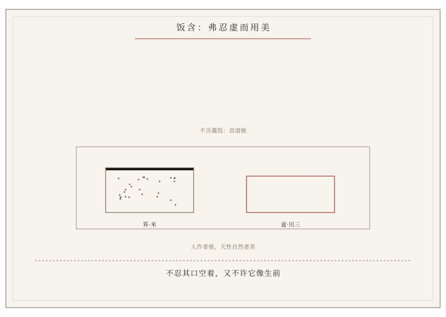

檀弓下 · 四·十七 · 第 342 课
饭用米、贝，弗忍虚也。不以食道，用美焉尔。
说什么事：给死者口中实米与贝，是不忍其口空虚。不用平常饭食之道，而用米贝之美者。
落在哪一层：以「物」量敬。论「给死者放什么，为何不能放现成的饭」。
为何编在此位：上节论哀之形，此节论哀之实。形在身，实在物。
【经】飯用米、貝，弗忍虛也。不以食道，用美焉爾。
【注】尊之也，食道褻，米貝美。
【疏】死者既无所知，所以饭用米贝，不忍虚其口。既不忍虚其口，所以不用饭食之道以实之。必用米贝者，以食道亵，米贝美，尊之不敢用亵，故用米贝，美善焉尔。／饭食，人所造作，细碎不絜，故为亵也。米贝，天性自然为美。／凡含用米贝，案《丧大记》云：「君沐粱，大夫沐稷，士沐粱。」又以所沐之米以饭之，故《士丧礼》「祝淅米于堂」，又云「祝受米，奠于贝北，主人左，扱米实于右」，是饭用沐米也。／以次差之，天子当沐黍与？是天子饭用黍也。其含，案《周礼·典瑞》「大丧，共饭玉、含玉」，郑注云：「含玉，如璧形而小耳。」／案《士丧礼》「贝三实于笲」，是士用贝三；依《杂记》，则大夫当五，诸侯七，天子九。／何休注《公羊》云：「天子以珠，诸侯以玉，大夫以碧，士以贝。」又《礼纬·稽命徵》：「天子饭以珠，含以玉；诸侯饭以珠，含以璧；卿大夫饭以珠，含以贝。」此等或是异代礼，非周法也。
饭 以米实死者口中，即「饭含」之饭。
贝 贝壳。古以为货，水物。
弗忍虚 不忍使其口空虚。
食道 平常饮食之法。
亵 轻慢、不洁。注「食道亵」。
美 美善。此指天性自然之物。
含 以玉、贝等实于口中。「饭」用米，「含」用玉贝，二者合称饭含。
给死者口中实米与贝，是不忍让他的口空着。不用平常饮食之法，而用美善之物罢了。
此章一正一反：正曰「弗忍虚」，反曰「不以食道」。
「弗忍虚」是情：不忍他空着。「不以食道」是礼：虽不忍，也不能把家常饭塞进去。二者相制，乃成「用美」。
一个「美」字，把这件事从「喂饭」改成了「致敬」。
第一层 「弗忍虚」：一个极朴的念头 死者无知，实与不实，于他无别。而人仍要实。
其所实者，非为死者，为生者心里那个「空」。看着他的口空着，人受不住。此一念极朴，礼即从此起。
礼之起，多起于这类「受不住」。不是道理先立，是心先受不住。
第二层 「不以食道」：不忍之外还要有敬 若只顺「弗忍」，则当以羹饭实之，最似生前。
礼偏不许：食道亵。疏解「饭食，人所造作，细碎不絜，故为亵」；「米贝，天性自然为美」。
此一断极妙：越是像生前的，越不许用。因为一像生前，就成了「他还吃饭」，是把死者当生者待，反成不敬。
第三层 美与亵之分：自然对人造 疏把界线画得很清楚：人造者为亵，天性自然者为美。
此线在礼中反复出现：祭用玄酒（水），不用美酒；奠用素器，不用雕饰；饭用米贝，不用羹饭。皆同一理——人事之物有痕迹，天性之物无痕迹；无痕迹者，可以通神。
第四层 疏的推演：从米到玉，一条等差链 疏由「饭用米」推出一整套：饭用沐米（诸侯粱、大夫稷、士粱，天子当黍）；含用玉（天子璧，诸侯璧，卿大夫珠，士贝）；贝数士三、大夫五、诸侯七、天子九。
又引何休、《礼纬》异说，断曰「或是异代礼，非周法」。此见疏家之慎：制度之链可以推，异代之异不可强合。
第五层 今日之用：告别之物，不宜家常 今人送别，多赠其生前所好：烟、酒、点心、旧衣。
此节不否定此种心意，只标出一条界线：凡物太像生前所用，则哀易转为「他还在」的错觉。礼取「美」而不取「似」，是要人承认：这是告别，不是续日。
与今日何干 今日丧仪有以逝者爱物随葬者，亦有以全套日用陈于灵前者。此节所示，是古人的取舍：以天性自然之物致敬，不以家常之物冒充。所重在「敬」，不在「像」。
| 左 | 右 |
|---|---|
| 饭 | 以米实口 |
| 含 | 以玉贝实口 |
| 弗忍虚 | 情之起处 |
| 不以食道 | 礼之节制 |
| 食道亵 | 人造细碎 |
| 米贝美 | 天性自然 |
| 沐米 | 饭所用 |
| 贝三 | 士之数 |
| 异代礼 | 疏所别 |
画一处素席之上的两只小器，视点俯视略斜。左器为竹笲，内盛米，米粒以细点示意，只画二三十点；右器为漆小盒，内盛贝三枚，贝作扇形，不画纹。两器之间留一段空席，空席上不置食器、不置羹碗。席外一道素布边。赭色只用在右器盒沿一道。
